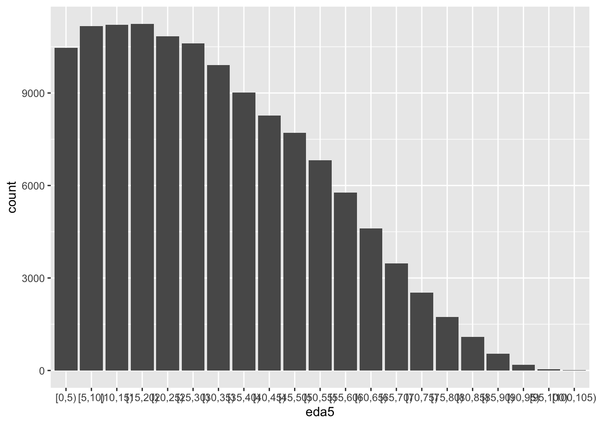

as pirámides son parte esencial de lo que llamamos Demografía estática, nos cuentan un siglo de historia de las poblaciones
2.2.1 Con grupos quinquenales
Si queremos hacerlo como gráficos de barra, seguramente queremos cortar la variable de edad. Igual este paso es esencial en la vida demográfica:
data("popAge1dt")pob_mx<- popAge1dt %>% dplyr::filter(name=="Mexico") %>% dplyr::mutate(eda5=cut(age, # la variable a cortarbreaks=seq(0,110, # El rango válidoby=5), # El ancho del intervaloinclude.lowest=T, # para que incluya el valor más bajo dentro del intervaloright=F)) # indica si el intervalo irá abierto en la derecha, ponemos un no con "FALSE"
pob_mx_long<-pob_mx %>% tidyr::pivot_longer(cols = popM:popF,values_to ="poblacion",names_to ="sexo") %>% dplyr::select(-pop) # checa este tipo de "anti-selección"
2.2.2 Momento de práctica
popAge son los datos históricos, piensa cómo volverías long la base de proyecciones popprojAge. ¡Checa que hay tipos de proyecciones!
2.2.3 Pirámide en {ggplot2}
### gráfico de barras de edades quinquenalespob_mx_long %>% dplyr::filter(year==2020) %>% ggplot2::ggplot() +aes(x=eda5, weight=poblacion) +geom_bar() # dibuja la geometría de barra

Una pirámide es un doble histograma por sexo, donde el valor de los hombres es negativo:
pob_mx_long %>% dplyr::filter(year==2020) %>% dplyr::mutate(poblacion2=if_else(sexo=="popM", -poblacion, poblacion)) %>% ggplot2::ggplot() +aes(eda5, fill=sexo, weight=poblacion2)+geom_bar() # dibuja la geometría de barra
anios<-unique(popAge5dt$year)pais<-c(858, 222, 320, 340, 484, 1830)# uy: 858# sv: 222 # gt: 320# hn: 340# mx: 484# CA: 916# LAC: 1830)# Este es el loop donde reemplaza por i cada código de paísfor (i in pais){ popAge5dt %>%mutate(poblacion=poblacion/1000) %>%filter(country_code==i) %>%filter(!sex=="Total") %>%filter(year==2020) %>%age_pyramid(edad_factor, # edadsplit_by = sex,count=poblacion)+labs(x="edad",y="millones de personas", title =paste0(popAge5dt[popAge5dt$country_code==i,]$name),fill="Sexo")->gggsave(plot=g, filename=paste0("pira",i,".png", sep=""),width=9,height=7) g assign(paste0("pira",i, sep=""), g)}
2.2.6 Momento de práctica
Haz un loop para hacer las pirámides de las proyecciones de Mexico, una para cada año.